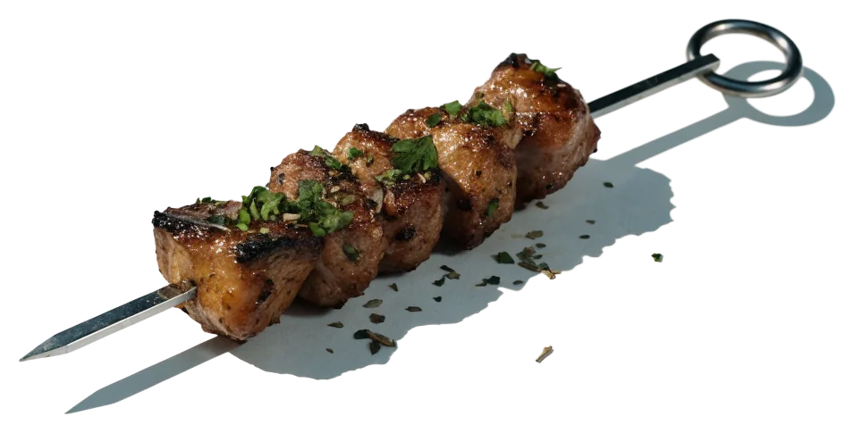
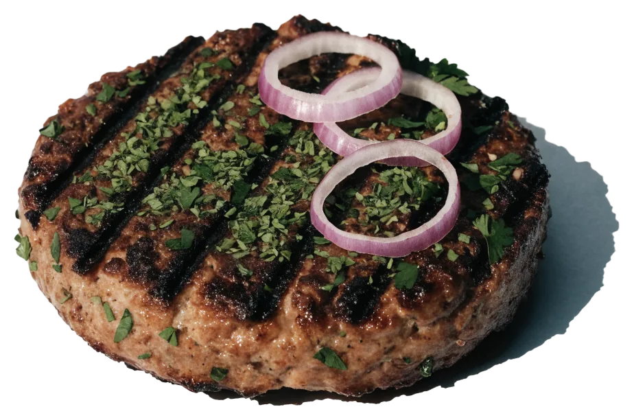
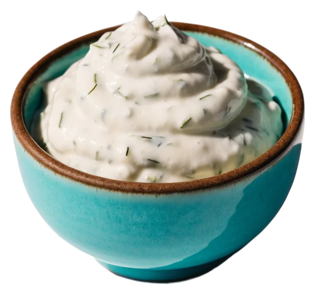

Inos Mix Grill Platte

Die gemischte Grillplatte des Hauses, Nr. 101 auf der Karte.
Griechisch, eine Treppe tiefer.
Lamm, Bifteki, Gyros und Fisch vom Grill im Souterrain an der Finkenau 1, Hamburg-Nord. Di–Fr ab 16:30, Sa ab 16, So ab 12 Uhr.

Ein paar Stufen hinab an der Finkenau 1: weißer Putz, Lichtkegel an der Wand, Bilder von Griechenland. Auf den Tisch kommen Souvlaki, Gyros, Bifteki, Lamm und Fisch vom Grill, dazu Tomatenreis, Bratkartoffeln und Tzatziki.
Alles gibt es auch zum Mitnehmen. Für den Abend am besten vorher einen Tisch reservieren.
Dazu Fisch, Salat, Desserts, Wein, Ouzo und Mythos vom Fass. Die ganze Karte mit Preisen liegt am Eingang und am Tisch – fragen Sie telefonisch nach.
Die gemischte Grillplatte des Hauses, Nr. 101 auf der Karte.

Der Spieß vom Grill, auf dem Grillteller mit Gyros, Tomatenreis und Bratkartoffeln.

Griechisches Hacksteak vom Grill.
Mit Kräuterbutter und Zitronenspalten, auf der Metallplatte serviert.

Zum Grill, zum Brot, zu allem.

Oliven, Peperoni, Frikadellen, Gemüse und Dips für die ganze Runde.
22081 Hamburg-Nord
Eingang an der Hausecke, ein paar Stufen hinab ins Souterrain.
Zum Mitnehmen vorher anrufen, dann steht es bereit, wenn Sie unten ankommen.
Foto: Daniel D · Google MapsFoto: Daniel D · Google MapsFoto: Daniel D · Google Maps Foto: Bull Dogg · Google Maps
Foto: Bull Dogg · Google Maps Foto: Timo Daedrich · Google Maps
Foto: Timo Daedrich · Google MapsTag, Uhrzeit, Personen – die Anfrage dauert eine Minute. Spontan mit großer Runde? Rufen Sie kurz an, wir stellen Tische zusammen.
4,6607 Bewertungen auf Google Anrufen · 040 2206027Foto: Bull Dogg · Google MapsDienstag bis Sonntag geöffnet, Montag ist Ruhetag.